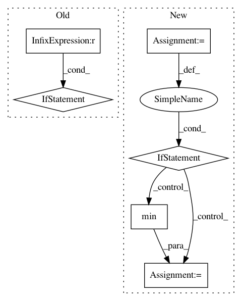

3ec1dac0608e511d4cf28e93a3fb908bbabceac5,nn/loss.py,LossFunction,set_loss_type,#LossFunction#Any#,15
Before Change
self.data_loss_fun = dice
elif type_str == "GDSC":
self.data_loss_fun = GDSC_loss
elif type_str == "SensSpec":
self.data_loss_fun = sensitivity_specificity_loss
def set_regularisation_type(self, type_str):
After Change
loss_type, decay, reg_type))
def set_loss_type(self, type_str):
accepted_functions = {"CrossEntropy": cross_entropy,
"Dice": dice,
"GDSC": GDSC_loss,
"SensSpec": sensitivity_specificity_loss}
if type_str in accepted_functions.keys():
self.data_loss_fun = accepted_functions[type_str]
else:
edit_distances = {}
for loss_name in accepted_functions.keys():
In pattern: SUPERPATTERN
Frequency: 4
Non-data size: 6
Instances
Project Name: NifTK/NiftyNet
Commit Name: 3ec1dac0608e511d4cf28e93a3fb908bbabceac5
Time: 2017-04-26
Author: z.eaton-rosen@ucl.ac.uk
File Name: nn/loss.py
Class Name: LossFunction
Method Name: set_loss_type
Project Name: ray-project/ray
Commit Name: 00325eb2b2cb40bacaad07828ac79ffa1f46898a
Time: 2020-05-14
Author: mfitton@berkeley.edu
File Name: python/ray/actor.py
Class Name:
Method Name: make_actor
Project Name: chainer/chainercv
Commit Name: 90b78b1379b3423aa3b4b5d0de7313f88bda23ab
Time: 2019-02-17
Author: yuyuniitani@gmail.com
File Name: chainercv/utils/mask/mask_to_bbox.py
Class Name:
Method Name: mask_to_bbox
Project Name: ray-project/ray
Commit Name: ef873be9e83fa8ac6b4d71c1a2e589f3db95b5c6
Time: 2021-03-02
Author: ekhliang@gmail.com
File Name: python/ray/resource_spec.py
Class Name: ResourceSpec
Method Name: resolve